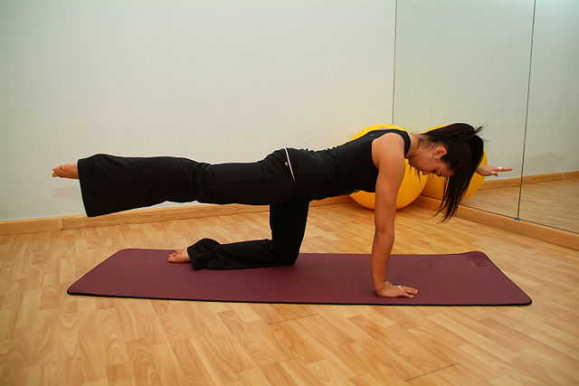
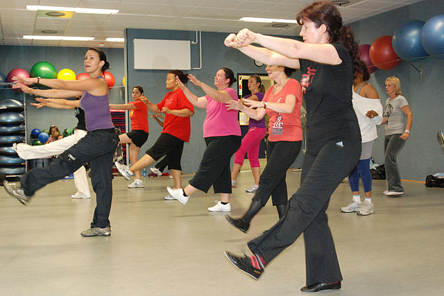
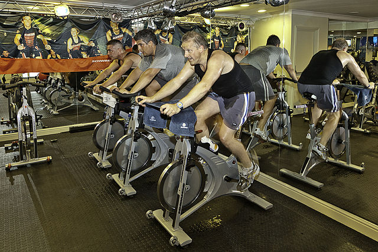
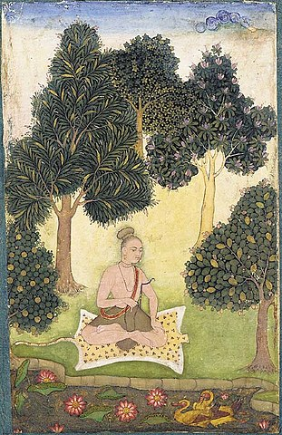
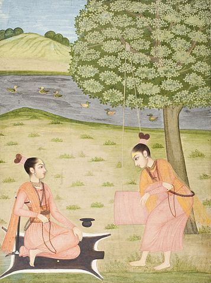

CLASSES
- Pilates 
- Zumba 
- Spin 
- Yogo  
- a disciplined method for attaining a goal;
- techniques of controlling the body and the mind;
- a name of a school or system of philosophy (darśana);
- with prefixes such as "hatha-, mantra-, and laya-, traditions specialising in particular techniques of yoga;
- the goal of Yoga practice.
- Decare for the kids
There is only limited evidence to support the use of Pilates to alleviate low back pain,
or improve balance in elderly people. Evidence from studies show that while
Pilates improves balance, limited data exists on whether this impacts on falls by the elderly.
Pilates has not been shown to be an effective treatment for any medical condition.
There is some evidence regular Pilates sessions can help muscle conditioning in healthy adults, when compared to doing no exercise.
Zumba is a total-body cardio and aerobic workout, which provides a large calorie consumption. A study shows that a person burns 300 to 900kcal with an hour long Zumba exercise. Because Zumba offers different options, proponents of the Zumba program claim that it is safe for all ages, meaning that anyone from age 0 to 100 can participate in this form of aerobic exercise. Some of the classes are specifically aimed at elderly people, to help them build strength, improve motion and posture, and socialize.
There are five core movements in the Spinning programme. Seated flat, with hands at the center part of the handlebars. This is hand position one. This position should be used only when seated, for flat road simulations and during the warm-up and cool down. Cadence between 80 and 110 RPM. Standing flat (also known as running), with hands wide on the back 12-14" part of the handlebars that crosses the rider's body. This is hand position two. Proper form for standing while running requires the body to be more upright and the back of the legs touching or enveloping the point of the saddle, with the center of gravity directly over the crank. The pressure of body weight should never rest excessively on the handlebars. Cadence is between 80 and 110 RPM Jumps, (also known as lifts), a combination of seated and standing with riders hands at position two for durations of between two and eight seconds. Cadence between 80 and 110 RPM. Seated climb with hands at position two, increased resistance and lower cadence of 60-80 RPM. Standing climb with hands wide and forward so the thumb tips are touching the far end of the handlebars (hand position three). The rider is canted slightly forward so that maximum force can be exerted onto the pedals with heavy resistance and a cadence of 60-80 RPM.
The ultimate goal of Yoga is moksha (liberation), although the exact definition of what form this takes depends on the philosophical or theological system with which it is conjugated. According to Jacobsen, Yoga has five principal meanings:
PROGRAMS
we have an set aside in our facility for kids
What Can Do:
It's important to understand what kids can do and what skills are appropriate for this age. By age 2, toddlers should be able to walk and run well. They might be able to kick a ball and jump in place with both feet. By age 3, toddlers usually can balance briefly on one foot, kick a ball forward, throw a ball overhand, catch a ball with stiff arms, and pedal a tricycle. Keep these skills in mind when encouraging your child to be active. Play games together and provide age-appropriate active toys, such as balls, push and pull toys, and riding vehicles. Through practice, toddlers will continue to improve and refine their motor skills. Mommy-and-me programs can introduce toddlers to tumbling, dance, and general movement. But you don't have to enroll kids in a formal program to foster these skills. The most important thing is to provide lots of opportunities to be active in a safe environment